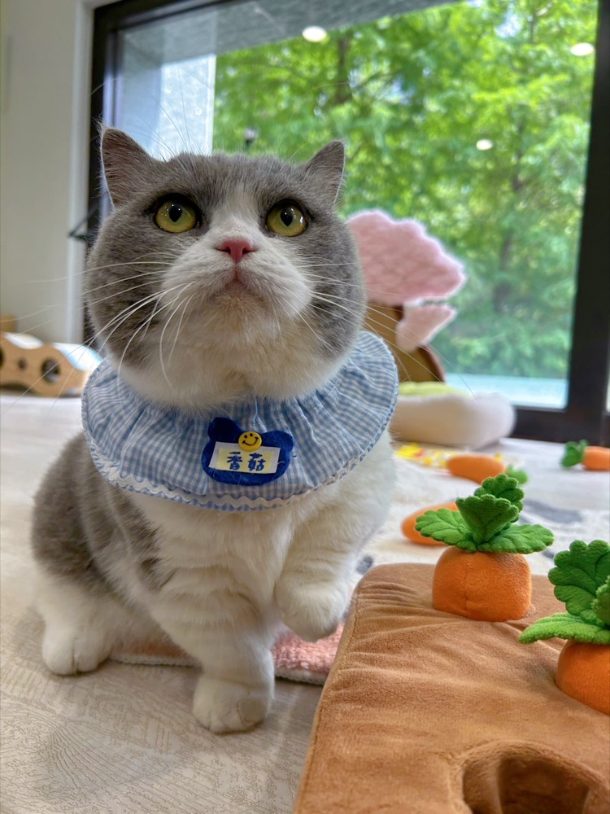

幼貓黃金成長期0-12 個月只有一次
KITTEN GOLDEN YEAR
牠的第一年
牠的第一年
會決定接下來十幾年
咬人、換牙、社會化、飲食、體重、腸胃、日常營養——這七件事都集中在同一年發生 ~ 香菇爸照月齡陪你一件一件來
✓ 依月齡導覽✓ 七大主題✓ 體重對照
01｜先看現在
你家主子現在幾個月？
每個階段該顧的事不一樣 不用一次全學會
02｜七大照顧主題
一次只看一件事
點卡片展開 ~ 每張都標了「通常什麼時候發生」
03｜體重對照
牠長得算順嗎？
看的是曲線 不是單次數字
—一般家貓的常見參考範圍
⚠️ 這只是粗略參考，品種差很多——曼赤肯、暹羅本來就偏輕，緬因、挪威森林會明顯超過這個範圍，米克斯個體差異也大
真正要看的是：每週固定同一時間、同一個秤量，體重有沒有持續往上 ~ 連續兩週沒增加、或開始往下掉，那要請獸醫看，不是自己加飯量
!
幼貓這些情況不要等
持續腹瀉或嘔吐超過 24 小時、完全不吃不喝、精神明顯萎靡叫不太動、牙齦或耳朵發白、體溫偏低身體冰冷、一直蹲砂盆尿不出來——幼貓體型小、脫水和低血糖都比成貓快很多，請直接聯絡獸醫院
04｜香菇爸私房
我自己養香菇時 最後悔的事
基本照顧上面都寫完了 ~ 這區是我家的真實日常

香菇的一天 八歲了 ~ 一天六餐、固定作息、每年健檢還有我在她身上做錯的三件事 看看我家怎麼過 →
05｜接下來看這些